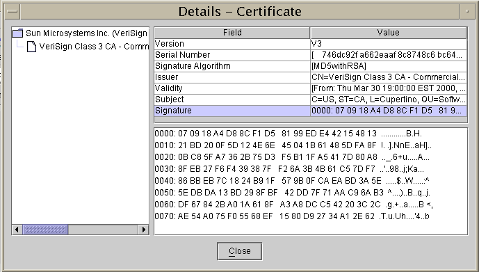
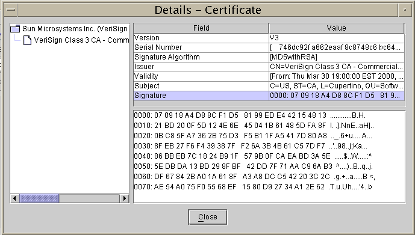

Author: Dennis Gu
Date: 24 April 2002
1 Project Description |
2 Technical Description |

3 Marketing |
4 Management and Planning |
|
| Complete | Started | Not Started | Difficulties | Trouble |
Appendices (as needed, suggestions below) |
|
Revision History |
|